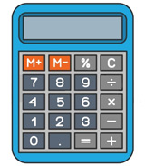

Меню
Меню Брокеры
Брокеры Стратегии
СтратегииБинарный калькулятор для онлайн подсчетов
Сегодня вы можете найти сотни различных бинарных брокеров, но выбрать их совсем не просто. Один из них предлагает 85% прибыли, если ваши торги заканчиваются «в деньгах», а другой - 75% прибыли «в деньгах» и 15% -ной прибыли, если ваши торги заканчиваются «вне денег».
| Депозит | Ставка | Прибыльность | ||
 |
350 рублей | 30 рублей | до 90% | ТорговатьПодробнее про Olymp Trade |
 |
5$ | 1$ | 87% | ТорговатьПодробнее про Binomo |
Прокрутите вниз, чтобы поиграть с нашим бинарным калькулятором и рассчитать, как выгодно торговать бинарными опционами с помощью брокера, который вам нравится.
0
Низкие
Расчёт ведётся по коэффициенту прибыльности 90%
Следующая таблица представляет собой интерактивный инструмент - калькулятор прибыли по бинарным опционам, в котором вы можете ввести свои номера и посмотреть, что произойдет с вашими инвестициями в раздел «Выходы». С помощью этого инструмента вы можете легко подсчитать, сколько прибыли вы собираетесь генерировать на основе чистых чисел. Это отличный способ принять решение, пытаясь найти лучшего брокера бинарных опционов и понять, какой вариант даст вам наилучшие результаты в финансовом отношении.
Наш вывод после игры с цифрами
Играя с разными ситуациями и цифрами, вы можете видеть, что 50% выигрышных сделок недостаточно для того, чтобы остаться в прибыли. Мы определили, что в большинстве случаев, когда брокеры предлагают 70% -ную отдачу от стандартных торгов Высокой / Низкой, вы должны быть верны почти в 60% своих сделок, чтобы добиться безубыточности. Иногда гораздо проще сделать ваше решение на основе точных цифр, где вы можете увидеть, что произойдет, если вы выиграете или потеряете свою торговлю. Кроме того, как ваши деньги будут увеличиваться или уменьшаться в конкретной ситуации?
Теперь гораздо легче понять вашу прибыльность и какой брокер по бинарным опционам может быть лучшим для вас при поддержке реальных чисел. Если у вас уже есть опыт трейдинга, вы можете использовать инструмент для расчета предыдущих сделок, если нет, то это отличный способ играть с цифрами и понимать, что вам нужно, чтобы делать деньги из двоичных сделок. Я надеюсь, что этот инструмент поможет вам принять наилучшее решение.
Если вас будут интересовать другие инструменты, которые помогут вам во время торгового процесса или при выборе между различными платформами, сообщите нам в разделе комментариев. Мы здесь, чтобы помочь!
Преимущества калькулятора
Торговля на бинарных контрактах - это не только получение прибыли от торговли финансовыми активами на разных рынках, но и проницательное управление капиталом посредством надлежащей оценки рисков. Сегодня использование калькуляторов бинарных опционов перешло на рынок форекс, представив новый и инновационный способ для форекс-трейдеров участвовать в нестабильных рынках с минимальными рисками и увеличивать шансы на прибыль от краткосрочных рыночных сдвигов. Калькуляторы двоичных опционов стали важным виджетами и торговым инструментом для трейдеров форекс в разработке торговых стратегий.
Особенности калькулятора двоичных параметров
Типичные бинарные сделки будут иметь место для трейдеров для поддержания своей валюты и параллельного пространства, где трейдеры могут вводить валюты, которые они намерены торговать. С помощью этой пары можно определить степень прибыли или убытка от торговли. Калькулятор также будет иметь место для ввода цены открытия сделки и другого места для входа в направление торговли; длинный или короткий. Размер финансовой торговли также можно ввести в другое пространство, чтобы указать ее стоимость, а конечное пространство удерживает цену закрытия сделки.
Управление рисками
В отличие от элементарного инструмента на большинстве платформ, калькулятор бинарных опционов не только показывает трейдеру, сколько стоит торговля, но и оценивает возможный риск в торговле и рекомендует точно, сколько трейдер должен инвестировать в рынок в это время. Это позволяет трейдерам определять уязвимость своих сделок и посредством этой оценки риска, они могут принимать более правильные решения.
Точность прогнозирования прибыли или убытков
Рынок форекс очень неустойчив и постоянно подвержен изменениям вверх и вниз. В отличие от старомодных методов финансовой торговли, бинарные торги обычно не удерживаются дольше, и они могут длиться до 15 минут. Эта волатильность рынка и короткие периоды истечения срока действия могут иметь большое значение, когда речь идет о прибылях и убытках. Тем не менее, трейдеры форекс используют калькуляторы бинарных опционов для определения сделок с наивысшими коэффициентами возврата, с высокой точностью рассчитывая потенциал прибылей и убытков на текущих торговых рынках. Фильтрация наших сделок только с максимальным потенциалом и совершением нескольких успешных сделок, трейдеры могут получать огромную прибыль от финансовых рынков.